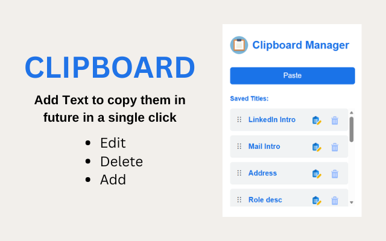
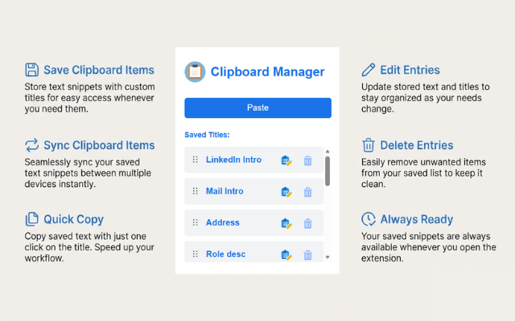

With over 1,500+ users, Clipboard is the simplest tool for text.
The simplest and most reliable
clipboard manager
Store text snippets with custom titles for easy access and sync them across devices instantly.
Rate the extension by visiting the stores above!


